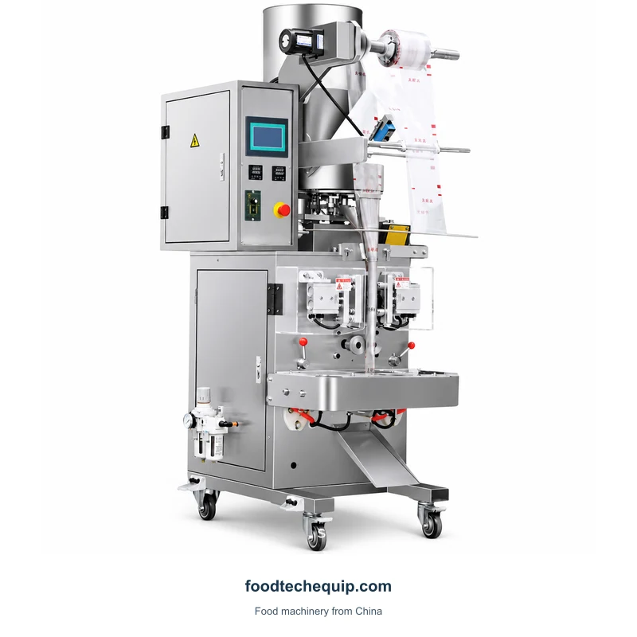

Sachet-Verpackung
Maschine zum Verpacken von Granulat in kleinen Beuteln
Vertikale Beutelverpackungsmaschine für Granulat mit Trichter und Folienzuführung. Angegebene Leistung 10–23 Packungen/min.
Maschine ansehenGehen Sie vom Füllgut und vom fertigen Sachet aus. Nennen Sie Sollportion, Länge, Breite, Folienaufbau und Nahtverlauf. Bei Sachets in Sonderform kann eine Zeichnung mit Siegelrand und Schnittlinie nötig sein.
Vertikale Beutelverpackungsmaschine für Granulat mit Trichter und Folienzuführung. Angegebene Leistung 10–23 Packungen/min.
Maschine ansehen
Folienverarbeitende Maschine für Formbeutel mit Flüssigkeiten oder Soßen. Für die Ausführung 200 sind 35–100 Beutel/min angegeben.
Maschine ansehen
Granulatverpackungsanlage mit einer oberen mehrteiligen Baugruppe und integriertem Folienhandling.
Maschine ansehen
Verpackungsmaschine für Flüssigkeiten in kleinen Beuteln mit konischem Trichter und geschlossenem unterem Verpackungsbereich.
Maschine ansehen
Vertikale Granulatverpackungsanlage mit Trichterzuführung, Folienhandhabungsrahmen und geschlossenen Arbeitsabschnitten.
Maschine ansehen
Vertikale Saucenverpackungsanlage mit Überkopf-Folienhandhabung und Formrohr.
Maschine ansehen
Vertikale Soßenbeutelausrüstung mit konischem Trichter, Folienrolle und Schaltschrank.
Maschine ansehen
Vertikale Verpackungsmaschine für Flüssigkeiten in kleinen Beuteln mit Formstation, Anschlüssen für die Produktzufuhr und Bedienung.
Maschine ansehen
Vertikale Verpackungsmaschine für Pulver in kleinen Beuteln mit Folienführung, Formstation und Bedienung.
Maschine ansehen
Vertikale Verpackungsmaschine für Flüssigkeiten in kleinen Beuteln aus PET-Verbundfolie.
Maschine ansehen
Vertikale Soßenbeutel-Verpackungsanlage mit oberem Einfülltrichter und Folienhandhabungsbaugruppe.
Maschine ansehen
Beutelverpackungsmaschine mit volumetrischem Becherdosierer, erhältlich mit großem, kleinem oder schwenkbarem Dosierbecher.
Maschine ansehen
Verpackungsanlage für Saucenbeutel, die Trichterzuführung, Folienhandhabung und Steuerung kombiniert.
Maschine ansehen
Verpackungsmaschine für Granulat mit volumetrischem Becherdosierer, oberer Produktzufuhr und vertikaler Folienführung.
Maschine ansehen
Vertikale Beutelverpackungsmaschine für Granulat mit oberer Produktzufuhr, Folienführung und vorderer Bedienung.
Maschine ansehen
Verpackungsmaschine für Pulver in kleinen Beuteln mit Einfülltrichter, vertikaler Folienführung und Bedienung.
Maschine ansehen
Beutelverpackungsmaschine mit volumetrischem Becherdosierer, Einfülltrichter, Folienrollenhalter und vertikalem Verpackungsbereich.
Maschine ansehenVersuchen Sie es mit einem anderen Schlüsselwort oder löschen Sie Ihre Filter.
Pulver, Granulat, Flüssigkeiten und Soßen erfordern unterschiedliche Fütterungsanordnungen. Teilen Sie ein Materialmuster, eine Zielportion und ein Siegellayout mit, um den fertigen Beutel zu definieren.
Vergleichen Sie Verpackungsraten und Folienabmessungen für die ausgewählte Konfiguration. Unterscheiden Sie in Ihrer Zeichnung zwischen Rollenbreite, fertiger Beutelbreite und Beutellänge.
| Auswahlbereich | Vergleichskriterien | Was ist bereitzustellen? |
|---|---|---|
| Material-Feed | Pulver-, Granulat- oder flüssiger Zustand | Materialprobe und Zielanteil |
| Rudelbildung | Rollenabmessungen im Vergleich zu fertigen Beutelabmessungen | Filmspezifikation und Zeichnung der fertigen Verpackung |
| Entlassung | Wie jede gefüllte Packung eingesammelt wird | Downstream-Handling und verfügbarer Platz |
Eine Sachet-Aufgabe umfasst die Empfangspackung sowie die Portionsvorbereitung. Wenn Sie nur eine abgemessene Dosis für einen bestehenden Verpackungsschritt benötigen, vergleichen Sie die Dosierung separat. Beschreiben Sie das fertige Paket und welche Arbeitsschritte das Angebot umfassen soll.